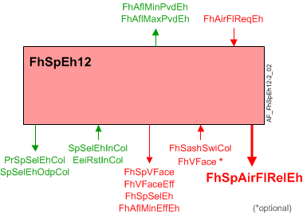

Fume hood exhaust air setpoint, exhaust level (FhSpEh12)
Overview
The application function "Fume hood exhaust air setpoint 12, exhaust air level" (FhSpEh12) is used to determine the exhaust airflow setpoint based on up to 2 binary inputs from sash position switches, input from an operator adjustment through the ODP, the balancing command, room exhaust demand, and the state of the fume hood operating mode.
This AF does not have any outputs associated with physical devices. The primary analog outputs of this AF are the following calculated value objects:
- Exhaust volume setpoint (FhSpAirFlEh), also present on chart output pin
- Relative exhaust volume setpoint (FhSpAirFlRelEh), also presented on chart output pin
Main features:
- Exhaust volume setpoint
Function

| Command or request (or related) |
| Notification of condition or status, or availability |
| Device mode |
| Interlock (internal signal, not a BACnet object; see Interlocks section for additional information) |


Sash position switch inputs: This application allows for two binary inputs to be used. The switches should be wired so the contacts close when the sash is in the closed or a lowered position. The binary inputs connected to the sash position switches are monitored. The second binary input is used to activate a middle exhaust airflow setpoint.
Examples of how 2 switches might be used include but are not limited to; a single vertical sash with 2 rotary lever arm limit switches or a double vertical sash with a position switch on each sash.
|
|
Exhaust setpoint selection: The exhaust setpoint selection (FhSpSelEh) is a multistate process value that has 5 modes:
- Off
- Auto
- Setpoint 1
- Setpoint 2
- Setpoint 3
These can be adjusted from the ODP when the setpoint adjustment features on the ODP are activated.
The application monitors the multistate calculated value object, exhaust air setpoint selection input value (SpSelEhIn), that is connected to the ODP. The application will write the current state of the exhaust setpoint selection on two multistate process value objects, exhaust air setpoint selection to ODP (SpSelEhOdpCol) and present exhaust air setpoint selection (PrSpSelEhCol).
A configuration extension parameter determines the value for the manual setpoints; SpOff, setpoint 1, setpoint 2, and setpoint 3. Other parameters configure the units for each of the manual setpoints.
Unit options | Enumeration value |
|---|---|
% | 98 |
ft3/min | 84 |
l/s | 87 |
m3/h | 135 |
- If % is selected, the manual setpoint will be a percentage of the current auto setpoint.
- If an airflow setpoint is selected (ft3/min, l/s, or m3/h), the manual setpoint will be set equal to the value.
Setpoint 1, Setpoint 2, and Setpoint 3 will be limited by the minimum exhaust airflow setpoint, the Off setpoint will be allowed to be set to 0.
A manual setpoint of Off, Setpoint 1, Setpoint 2, or Setpoint 3 received from the ODP updates the value of the FhSpSelEh and sets the priority to 13. A setpoint of Auto received from the ODP will relinquish priority 13 for FhSpSelEh and update the value to priority 15.
The manual setpoint is set to Auto based on a change of FhOpMod and RlqManSpSelEh. The manual setpoint can be released when FhOpMod changes to Off or to Low air volume flow. The manual setpoint will not be released if the setpoint is configured to trigger emergency purge.
ManOpLockCnf defines when the ODP will be locked based on FhOpMod. The user setpoint selection will be locked by setting the priority of Fume hood exhaust setpoint selection, FhSpSelEh to 12. The priority is passed down to SpSelEhOdp and PrSpSelEh.
FhSpSelEh Present priority | Exhaust setpoint selection to ODP | Present exhaust air setpoint selection |
|---|---|---|
<13 | 12 | 12 |
13 | 13 | 13 |
>13 | 15 | 15 |
SpSelEhLoAirFl defines how FhSpSelEh will be set when the FhOpMod changes to low air volume flow.
- When the configuration extension item is set to disabled, no action is taken.
- If the configuration extension item is set to off, setpoint 1, setpoint 2, or setpoint 3, the exhaust setpoint selection will be set to that value.
The FhSpSelEh will return to Auto when the FhOpMod changes to Control.
Emergency purge: If the configuration extension item is set to off, setpoint 1, setpoint 2, or setpoint 3 and the exhaust setpoint selection is set to that value, SpEmgPrg is turned on.
Note:
The QMX3.P88 fume hood operating display does not have a specific button for emergency purge. The configuration extension item EmgPrgCnf allows one of the manual setpoints to be used to activate emergency purge.
Exhaust airflow request from room: The fume hood setpoint may need to be increased due to laboratory temperature or laboratory airflow requirements. A fume hood demand request will be sent from the laboratory room to maintain proper pressurization.
The exhaust airflow request from the room (FhAirFlReqEh) will only change the exhaust airflow setpoint (FhSpAirFlEh) when the exhaust setpoint selection (FhSpSelEh) is set to auto.
The fume hood minimum (FhAflMinPvdEh) and maximum airflow provided signals (FhAflMaxPvdEh) are collected by the room. If the fume hood is not configured to allow the room to adjust the fume hood setpoint the air flow provided signals will be set to zero.
For an explanation of how the room demand setpoint reset affects the exhaust airflow setpoint, see the following sections, Control Setpoint and Low flow setpoint.
Exhaust airflow setpoint determination: The exhaust airflow setpoint is an analog process value that is dependent on the state of the balancing command, fume hood mode, multistate setpoint, room exhaust demand and the sash switches. The objects affecting the exhaust airflow setpoint are evaluated based on the follow priority:
- Balancing command is balancing
- Fume hood mode is fire
- Fume hood mode is emergency
- Fume hood mode is off
- Multistate setpoint is Off, Setpoint 1, Setpoint 2 or Setpoint 3
- Fume hood mode is control
- Fume hood mode is low flow
The priority for the exhaust airflow setpoint is set based on the priority of the fume hood operating mode object.
Fume hood operating mode present priority | Exhaust volume setpoint priority |
|---|---|
1-3 | 2 |
4-6 | 5 |
7-15 | 15 |
Balancing mode exhaust airflow setpoint: If the balancing command (VavEhBalCmd) is set to Balancing, the exhaust airflow setpoint is determined by the Balancing Mode (VavEhBalMod).
Emergency alarm exhaust airflow setpoint: When the fume hood operating mode (FhOpMod) is set to Emergency, the exhaust air flow setpoint will be set equal to the emergency exhaust setpoint (SpEmgPrg) setting.
Fume hood operating mode off setpoint: When the fume hood operating mode(FhOpMod) is set to off, the exhaust air flow setpoint will be set to 0.
Exhaust setpoint selection: When the exhaust setpoint selection (FhSpSelEh) is set to off, the exhaust airflow setpoint will be set according to SpOffUnit and SpOffUnit. The setpoint will be limited by the fume hood minimum exhaust setpoint unless the resulting setpoint is equal to zero, then the setpoint will be set to zero.
- When the exhaust setpoint selection is auto, the exhaust airflow setpoint will follow the control setpoint or low flow setpoint determination.
- When the exhaust setpoint selection is Setpoint 1, the exhaust airflow setpoint will be set according to Sp1Unit and Sp1 . The setpoint will be limited by the fume hood minimum exhaust setpoint.
- When the exhaust setpoint selection is Setpoint 2, the exhaust airflow setpoint will be set according to Sp2Unit and Sp2. The setpoint will be limited by the fume hood minimum exhaust setpoint.
- When the exhaust setpoint selection is Setpoint 3, the exhaust airflow setpoint will be set according to Sp3Unit and Sp3. The setpoint will be limited by the fume hood minimum exhaust setpoint.
Control setpoint: When fume hood operating mode (FhOpMod) is control and all sash switch binary inputs are open or if no switches are present, the exhaust airflow setpoint (FhSpAirFlEh) is set equal to the maximum exhaust airflow setpoint (SpAirFlMaxReq).
When fume hood operating mode (FhOpMod) is control and there are two sash switch binary inputs and one of the binary inputs is closed, the exhaust airflow setpoint will be set equal to the mid exhaust airflow setpoint (FhSpAirFlMidEh).
When fume hood operating mode (FhOpMod) is control and all of the sash switch binary inputs are closed, the exhaust airflow setpoint will be set equal to the minimum exhaust airflow setpoint.
When the occupied exhaust airflow setpoint is higher than minimum, the exhaust airflow request from the room will be evaluated against, maximum airflow setpoint by room request (SpAirFlMaxReq), that has the states:
- minimum setpoint (6)
- middle setpoint (7)
- maximum setpoint (8)
If the exhaust request is higher than the occupied exhaust airflow setpoint, the exhaust airflow setpoint will be set equal to the exhaust request.
When the occupied exhaust airflow setpoint is equal to minimum setpoint, the exhaust airflow request from the room will be evaluated against minimum airflow setpoint by room request (SpAirFlMinReq), which has the states:
- minimum setpoint (6)
- middle setpoint (7)
If the exhaust request is higher than the occupied exhaust airflow setpoint, the exhaust airflow setpoint will be set equal to the exhaust request.
Low flow setpoint: The low flow setpoint will be determined by a one of the following:
- setpoint off (2)
- setpoint 1 (3)
- setpoint 2 (4)
- setpoint 3 (5)
- minimum setpoint (6)
- middle setpoint (7)
- maximum setpoint (8) t
When FhOpMod is low flow, the exhaust airflow setpoint will be set equal to the lower of the setpoint selected by the configuration extension and the setpoint determined by the sash switch inputs.
When the unoccupied exhaust airflow setpoint (SpAirFlUcd) is higher than minimum setpoint, the room exhaust airflow request from the room will be evaluated against the multistate configuration extension item, SpAirFlMaxReq. If the exhaust request is higher than the unoccupied exhaust airflow setpoint, the exhaust airflow setpoint will be set equal to the exhaust request.
When the unoccupied exhaust setpoint (SpAirFlUcd) is less than or equal to minimum setpoint, the exhaust airflow request from the room will be evaluated against the multistate configuration extension item, SpAirFlMinReq. If the exhaust request is higher than minimum airflow setpoint and higher than the unoccupied exhaust airflow setpoint, the exhaust airflow setpoint will be set equal to the exhaust request.
Relative setpoint: The relative airflow setpoint for the fume hood is a calculated analog value that is normalized as a percentage of the exhaust airflow setpoint based on the nominal (rated) value for the fume hood airflow, where 100% equals nominal and the relative value will not be limited to 100%.
Energy efficiency indication: If a manual setpoint is selected that results in a higher exhaust airflow setpoint than the auto setpoint, the setpoint AF notifies the ODP to set the energy efficiency indicator (green leaf) (EeiRstInCol) to Poor (2).
If the balancing command (VavEhBalCmd) is Balancing or the fume hood operating mode (FhOpMod) is Fire, Emergency purge, or Open, the energy efficiency indicator (green leaf) is set to Undefined (1).
If none of the above conditions exist, the energy efficiency indicator (green leaf) will be set to Good (4).
If the energy efficiency indicator reset button (REeiRstIn) is pressed when the high manual setpoint indicator is on, the manual setpoint will be released and the auto setpoint will be used.
Face velocity monitor: The following objects are associated with the optional face velocity monitor:
- Analog input, fume hood face velocity.
- Analog calculated value, fume hood face velocity setpoint.
- Analog configuration value, fume hood occupied setpoint.
- Analog configuration value, fume hood unoccupied setpoint.
- Configuration extension item, attenuation filter face velocity.
The optional face velocity sensor or “through-the-wall sensor”. FhVFace, can be used to measure an air velocity that represents the face velocity of the fume hood. The velocity averaged over the open face area of the hood may differ significantly from the velocity measured through the sensor. The application includes a configurable conversion to calculate a representative face velocity from the sensed velocity, a filter constant and correction factor are part of the analog input extension involved to convert the raw measured face velocity to the effective face velocity, FhVFaceEff.
The fume hood face velocity setpoint (FhSpVFace) is set equal to the unoccupied setpoint (FhUcdSpVFace) , if the unoccupied setpoint is greater than zero and the fume hood operating mode is low flow, otherwise the face velocity setpoint is set equal to the occupied setpoint (FhOcdSpVFaceEf).
When the occupied fume hood face velocity setpoint is not equal to zero and FhVFace is present and the value from the face velocity sensor and the face velocity setpoint will be used to determine airflow alarms.
The Failure alarm checks the status of the effective face velocity valid signal to determine if there is problem with a sensor. Since the face velocity sensor is optional, the effective face velocity will be set valid when FhVFace is valid or when FhVFace is not present.
Configuration
 Objects
Objects
Description | Object | Type | Default value |
|---|---|---|---|
Fume hood exhaust middle air volume flow setpoint | FhSpAirFlMidEh | ACnfVal | 600 [m3/h] |
Fume hood exhaust manual air volume flow setpoint | FhSpAirFlManEh | ACnfVal | 200 [m3/h] |
Fume hood unoccupied face velocity setpoint 0…20 [m/s], 0…3937 [ft/min] | FhUcdSpVFace | ACnfCal | 0.00 [m/s] |
Fume hood occupied face velocity setpoint 0…20 [m/s], 0…3937 [ft/min] | FhOcdSpVFace | ACnfCal | 0.00 [m/s] |
 Parameters
Parameters
Description | Parameter | Default value |
|---|---|---|
Emergency purge setpoint ▶When EmgPrgCnf is set to disabled (1) and a manual setpoint is selected, no action is taken. When FhEmgPrg is active, the exhaust airflow setpoint will be multiplied by the emergency setpoint percentage. On fume hoods with face velocity sensors the face velocity setpoint is also multiplied by the emergency setpoint percentage. Select the setpoint to be used when FhEmgPrg is active . | SpEmgPrg | 6:Maximum setpoint |
Fire exhaust setpoint ▶ Select the setpoint to be used when FhFire is active. | SpEhFire | 7:Maximum setpoint |
Time for increasing exhaust air volume flow setpoint | TiIcrSpAirFlEh | 0 [s] |
Time for decreasing exhaust air volume flow setpoint | TiDcrSpAirFlEh | 0 [s] |
Attenuation filter face velocity | AtnFltVFace | 2 [s] |
Maximum air volume flow setpoint by room request 1:Minimum setpoint | SpAirFlMaxReq | 1:Minimum setpoint |
Minimum air volume flow setpoint by room request ▶ Setpoint value higher than the minimum fume hood exhaust setpoint, used when the fume hood exhaust airflow is at minimum and the room requests additional airflow. | SpAirFlMinReq | 1:Minimum setpoint |
Air volume flow setpoint by unoccupied 1:Off | SpAirFlUcd | 5:Minimum setpoint |
Unit for setpoint off 1:ft3/min | SpOffUnit | 3:[%] |
Setpoint off | SpOff | 100 |
Unit for setpoint 1 Enumeration see SpOffUnit | Sp1Unit | 3:[%] |
Setpoint 1 | Sp1 | 100 |
Unit for setpoint 2 Enumeration see SpOffUnit | Sp2Unit | 3:[%] |
Setpoint 2 | Sp2 | 100 |
Unit for setpoint 3 Enumeration see SpOffUnit | Sp3Unit | 3:[%] |
Setpoint 3 | Sp3 | 100 |
Emergency purge configuration ▶ Used to simulate an Emergency Max button on the P88 ODP. | EmgPrgCnf | 1:Disabled |
Exhaust setpoint selection on low air volume flow Enumeration see EmgPrgCnf | SpSelEhLoAirFl | 1:Disabled |
Relinquish manual mode on exhaust setpoint selection ▶ Manual setpoints will be released and setpoint selection will return to Auto when FhOpMod = RlqManSpSelEh value. The manual setpoint will not be released if the setpoint is configured for emergency purge. | RlqManSpSelEh | 2:Off |
Manual operation lock configuration Enumeration see RlqManSpSelEh | ManOpLockCnf | 2:Off |
Retain manual setpoint after power failure 0:No | ManSpAfPwrFail | 0:No |
Interface
Interface | Description | Type | Ref. | Owned by | |
|---|---|---|---|---|---|
FhSashSwiCol | Collection of fume hood sash switch | ColView | ● | - | |
| FhSashSwiRs | Result of fume hood sash switch 0:Closed | BCalcVal | ● | - |
FhSashSwi | Fume hood sash switch 0:Closed | BI | ◉ | Room segment / Field device | |
FhVFace | Fume hood face velocity | AI | ◉ | Room segment / Field device | |
FhSpAirFlEh | Fume hood exhaust air volume flow setpoint | APrcVal | ● | - | |
FhSpAirFlRelEh | Fume hood exhaust setpoint for relative air volume flow | ACalcVal | ● | - | |
FhSpSelEh | Fume hood exhaust air setpoint selection 1:Off | MPrcVal | ● | - | |
FhVFaceEff | Fume hood effective face velocity | ACalcVal | ● | - | |
FhAirFlReqEh | Fume hood exhaust air volume flow request from room | ACalcVal | ● | - | |
FhAflMinEffEh | Fume hood exhaust effective minimum air volume flow | ACalcVal | ● | - | |
FhAflMaxPvdEh | Fume hood maximum provided air volume flow for exhaust | ACalcVal | ● | - | |
FhAflMinPvdEh | Fume hood minimum provided air volume flow for exhaust | ACalcVal | ● | - | |
EeiRstInCol | Collection of reset energy efficiency indicator input value | ColView | ● | - | |
| EeiRstInRs | Result of reset energy efficiency indicator input value 0:Off | BCalcVal | ● | - |
EeiRstIn | Reset energy efficiency indicator input value 0:Off | BCalcVal | ◉ | Room segment / Field device | |
SpSelEhInCol | Collection of exhaust air setpoint selection input value | ColView | ● | - | |
| SpSelEhInRs | Result of exhaust air setpoint selection input value 1:Off | MCalcVal | ● | - |
SpSelEhIn | Exhaust air setpoint selection input value 1:Off | MI | ◉ | Room segment / Field device | |
SpSelEhOdpCol | Collection of exhaust air setpoint selection to ODP | ColView | ● | - | |
| SpSelEhOdp | Exhaust air setpoint selection to ODP 1:Off | MO | ◉ | Room segment / Field device |
PrSpSelEhCol | Collection of present exhaust air setpoint selection | ColView | ● | - | |
| PrSpSelEh | Present exhaust air setpoint selection 1:Off | MPrcVal | ◉ | Room segment / Field device |
FhSpVFace | Fume hood face velocity setpoint | ACalcVal | ● | - | |
FhEei | Fume hood energy efficiency indication 1:Undefined | MCalcVal | ◉ | Hvac16 | |
FhSpAirFlMidEh | Fume hood exhaust middle air volume flow setpoint | ACnfVal | ● | - | |
FhSpAirFlManEh | Fume hood exhaust manual air volume flow setpoint | ACnfVal | ● | - | |
FhUcdSpVFace | Fume hood unoccupied face velocity setpoint | ACnfVal | ● | - | |
FhOcdSpVFace | Fume hood occupied face velocity setpoint | ACnfVal | ● | - | |
Engineering and commissioning
Optional.